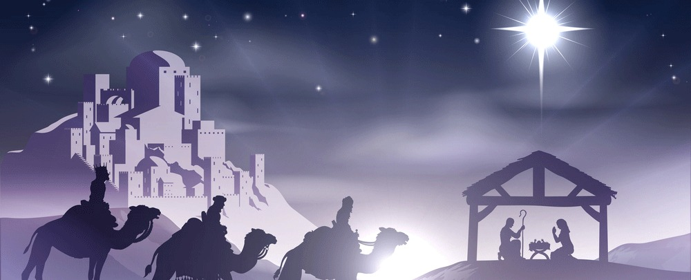

Christelijke feestdagen

Christelijke feest- en gedenkdagen zijn dagen waarop er feest wordt gevierd of iets wordt herdacht in het christendom. Veel van deze feestdagen zijn in Nederland officiële feestdagen geworden omdat Nederland vroeger een behoorlijk katholiek land was en dit dus gegroeid is in onze cultuur. Er zullen dus flink wat bekende feestdagen hieronder in het lijstje staan.
Christelijke feestdagen:
- Palm zondag: zondag 25 maart 2018
- Witte donderdag: donderdag 29 maart 2018
- Goede vrijdag: vrijdag 30 maart 2018
- Stille zaterdag: zaterdag 31 maart 2018
- Pasen: zondag 1 en maandag 2 april 2018
- Hemelvaartsdag: donderdag 10 mei 2018
- Pinksteren: zondag 20 en maandag 21 mei 2018
- Kerstmis: dinsdag 25 en woensdag 26 december 2018